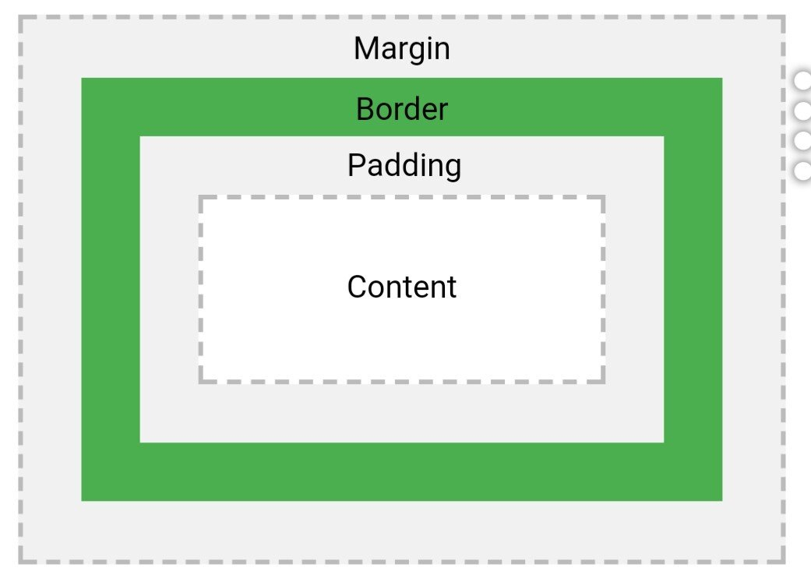

When we talk about the CSS box model, we are referring to its design and layout.
The box model is best understood visually.
In the following diagram we see an "onion-layer-esque" of elements that are built around the central element which is content. 
Content
The content element could be text, or an image or even something else.Padding
Padding is the first layer surrounding the content. This layer is transparent and as its name indicates it provides padding or separation between content and the next layer; the Border.Border
The Border sits around the both the padding and the content, this layer can be styled with colour and is not transparent unlike the padding.Margin
The margin is the final layer, like padding this layer is also transparent and this is defines the space around the elements and it also clears an area around the element. Margins are used to position an element vertically or horizontally on a page. By creating a margin adjacent elements are pushed away.Summary/TLDR
In my own mind, the elements of the CSS box model can be split into functional layers and visual layers.Padding and margins are functional layers, they determine how an element sits in a container (Padding) or how an element sits in space relative to other elements (Margins). The content and the Border are the visual layer elements, they provides the visual aspects of the CSS box model.
References:
https://www.w3schools.com/css/css_boxmodel.asp
https://www.javatpoint.com/margin-vs-padding